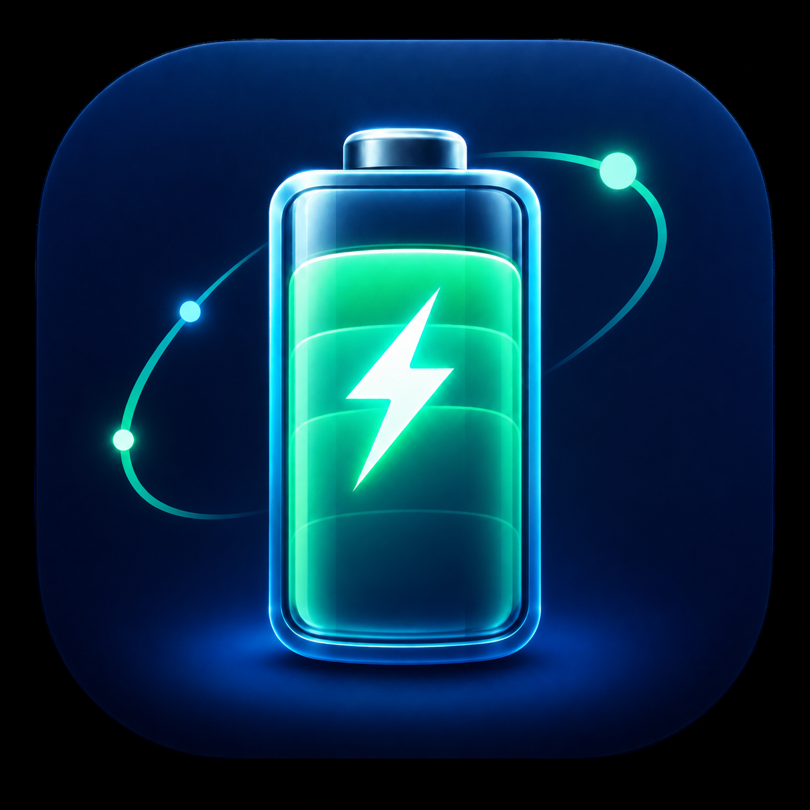

Actieradius— km

MINK BATTERY HEALTH
94%
Batterij—%
Laatste locatieStraat en huisnummer laden…Adres van de laatst ontvangen Tesla-locatie
Locatie laden…
60 KWH ACCUPAKKET
Batterij
Uitgebreide batterijgegevens van Tesla Mink.
Verbruik afgelopen 7 dagenNog onvoldoende ritgegevens
GESCHIEDENIS
Ritten
Recente ritten en energieverbruik.
Thuis → AmsterdamVandaag, 08:14 · 31 min24,8 km
11,8 kWh/100 kmAmsterdam → ThuisGisteren, 17:42 · 38 min26,1 km
13,1 kWh/100 kmTESLA MINK
Bediening
◐ Slaapstand—% · — km
PERSOONLIJK